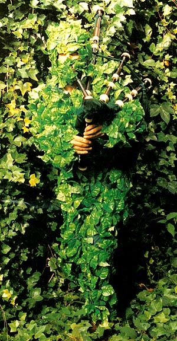

'It has been said that the Green Man came back from the dead. He is beyond the reach of powers that be and is therefore connected with the idea of freedom and common land. He used to practice his pipes in the open air until the air couldn't deal with him anymore. Now his tunes delight nieghbours, who have been known to break the windows at his house to hear the music better.'
from Refugees by Orla Barry